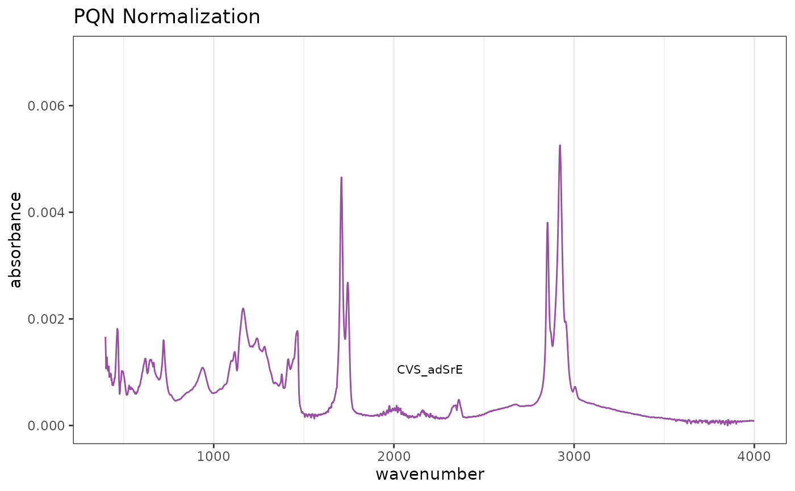
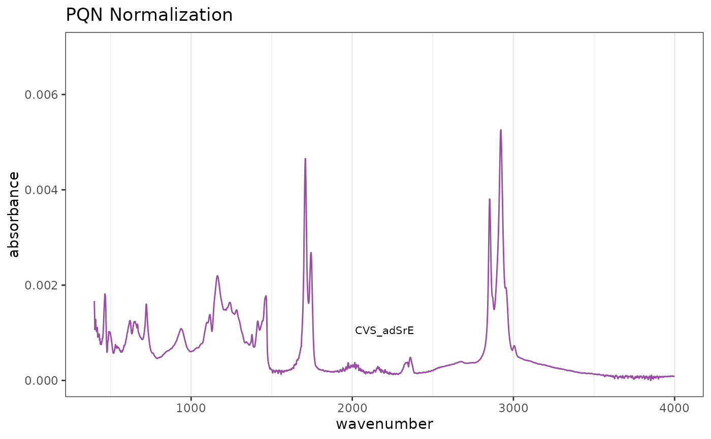

This function carries out normalization of the spectra in a
Spectra object. There are currently four options:
"PQN"carries out "Probabalistic Quotient Normalization" as described in the reference. This is probably the best option for many data sets. However, please be careful if your sample has protein in it, PQN is potentially biased. See the references."TotInt"normalizes by total intensity. In this case, the y-data of aSpectraobject is normalized by dividing each y-value by the sum of the y-values in a given spectrum. Thus each spectrum sums to 1. This method assumes that the total concentration of all substances giving peaks does not vary across samples which may not be true."Range"allows one to do something similar to"TotInt"but rather than using the sum of the entire spectrum as the denominator, only the sum of the given range is used. This would be appropriate if there was an internal standard in the spectrum which was free of interferance, and one wanted to normalize relative to it."zero2one"scales each spectrum separately to a[0...1]scale. This is sometimes useful for visual comparison of chromatograms but is inappropriate for spectral data sets.
normSpectra(spectra, method = "PQN", RangeExpress = NULL)Arguments
- spectra
An object of S3 class
Spectra().- method
One of
c("PQN", "TotInt", "Range", "zero2one")giving the method for normalization.- RangeExpress
A vector of logicals (must be of
length(Spectra$freq)). This vector should beTRUEfor the frequency range you want to serve as the basis for norming, andFALSEotherwise. The entire spectrum will be divided by the sum of theTRUErange. See the examples.
Value
An object of S3 class Spectra().
References
Probabalistic Quotient Normalization is reported in F. Dieterle et al. Analytical Chemistry vol. 78 pages 4281-4290 (2006).
The exact same mathematics are called "median fold change normalization" by Nicholson's group, reported in K. A. Veselkov et. al. Analytical Chemistry vol. 83 pages 5864-5872 (2011).
Corriea et al. "1H NMR Signals from Urine Excreted Protein are a Source of Bias in Probablistic Quotient Normalization" Analytical Chemistry vol. 94 pages 6919-6923 (2022).
See also
Additional documentation at https://bryanhanson.github.io/ChemoSpec/
Examples
# This example assumes the graphics output is set to ggplot2 (see ?GraphicsOptions).
library("ggplot2")
data(SrE.IR)
# Reference spectrum before normalization
p1 <- plotSpectra(SrE.IR) + ggtitle("Original Spectrum")
p1
 # Default PQN normalization
res1 <- normSpectra(SrE.IR)
p2 <- plotSpectra(res1) + ggtitle("PQN Normalization")
p2

# Norm over carbonyl region
RE <- SrE.IR$freq > 1650 & SrE.IR$freq < 1800
res2 <- normSpectra(SrE.IR, method = "Range", RangeExpress = RE)
p3 <- plotSpectra(res2) + ggtitle("Normalized to Carbonyl Peaks")
p3
# Check numerically
rowSums(res2$data[, RE]) # compare to rowSums(SrE.IR$data[,RE])
#> [1] 1 1 1 1 1 1 1 1 1 1 1 1 1 1 1 1
# Default PQN normalization
res1 <- normSpectra(SrE.IR)
p2 <- plotSpectra(res1) + ggtitle("PQN Normalization")
p2

# Norm over carbonyl region
RE <- SrE.IR$freq > 1650 & SrE.IR$freq < 1800
res2 <- normSpectra(SrE.IR, method = "Range", RangeExpress = RE)
p3 <- plotSpectra(res2) + ggtitle("Normalized to Carbonyl Peaks")
p3
# Check numerically
rowSums(res2$data[, RE]) # compare to rowSums(SrE.IR$data[,RE])
#> [1] 1 1 1 1 1 1 1 1 1 1 1 1 1 1 1 1